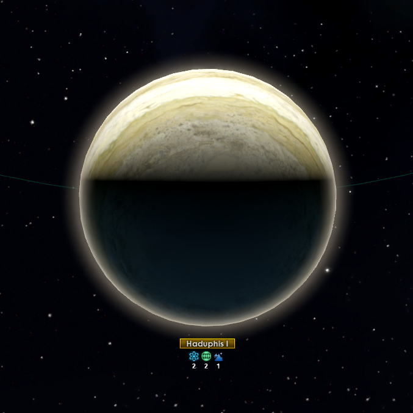

Console:Resources
{kind=link}

In Stellaris, the economy is based on the production and consumption of resources and services, either from a specific planet or throughout the empire. It relies primarily on  pops working
pops working  jobs to produce most resources, with mining or research stations built over space deposits as a secondary source. Certain buildings and other sources can produce resources as well.
jobs to produce most resources, with mining or research stations built over space deposits as a secondary source. Certain buildings and other sources can produce resources as well.
Resources can vary from fairly common  food crops to very rare substances such as
food crops to very rare substances such as  dark matter and also abstract concepts such as
dark matter and also abstract concepts such as  influence and
influence and  research.
research.
There are two kinds of resources: Material and Abstract. In addition, certain empire capacities (e.g.  naval capacity) or planetary values (e.g.
naval capacity) or planetary values (e.g.  amenities) are "produced" in a similar way to resources. If an empire's stored stockpile for a material resource drops to 0 with negative income, for most material resources it triggers a Shortage situation and for rare and abstract resources it gives an empire-wide penalty.
amenities) are "produced" in a similar way to resources. If an empire's stored stockpile for a material resource drops to 0 with negative income, for most material resources it triggers a Shortage situation and for rare and abstract resources it gives an empire-wide penalty.
Resource storage capacity
|
|
Please help with verifying or updating this section. It was last verified for version 3.14. |
All resources can be stockpiled. All empires have a 15,000 starting storage capacity for each material resource except  energy, which has a 50,000 starting storage capacity. An empire can build
energy, which has a 50,000 starting storage capacity. An empire can build Resource Silos planetary and
Resource Silos planetary and  starbase buildings to expand their storage capacity. In addition, when the Galactic Market is founded, all members of the
starbase buildings to expand their storage capacity. In addition, when the Galactic Market is founded, all members of the  Galactic Community gain 10,000 storage capacity, and researching
Galactic Community gain 10,000 storage capacity, and researching  Mega-Engineering adds 20,000 to an empire's storage capacity. When an empire's storage capacity for a resource is reached, any additional production of that resource is simply lost.
Mega-Engineering adds 20,000 to an empire's storage capacity. When an empire's storage capacity for a resource is reached, any additional production of that resource is simply lost.
For abstract resources, only  influence has a maximum storage capacity: 1,000.
influence has a maximum storage capacity: 1,000.  Unity and
Unity and  research have unlimited storage capacity; stored research is automatically used when researching a technology or special project, for more see stored research.
research have unlimited storage capacity; stored research is automatically used when researching a technology or special project, for more see stored research.
Material resources
|
|
Please help with verifying or updating this section. It was last verified for version 3.14. |
Material resources are the primary means of developing an empire's infrastructure. Most construction – whether buildings, districts, ships, or other – requires at least one material resource. Additionally, material resources are used for most  upkeep, from
upkeep, from  pops to ships to megastructures and more.
pops to ships to megastructures and more.
Resource deposits the empire does not have the technology to exploit will appear greyed out on map.
Basic resources
Basic resources are directly gathered from orbital deposits or by  jobs from resource districts.
jobs from resource districts.
| Resource | Main uses | Description |
|---|---|---|
|
They are used for upkeep of Ships and Buildings, to clear planetary To increase:
| |
|
They are used to construct planetary To increase:
| |
|
To increase:
Machine Intelligences generally do not use this resource. |
Advanced resources
Advanced resources are produced by  jobs which refine them from
jobs which refine them from  minerals.
minerals.
| Resource | Main uses | Description |
|---|---|---|
|
Among other things, they are used to construct Civilian Ships, Military Ships, Starbases, and Megastructures. To increase:
| |
|
Some To increase:
Hive Minds do not use this resource. Machine Intelligences generally do not use this resource. |
Strategic resources
 Strategic resources are specialized resources required to both build and maintain advanced buildings and ship components. They are harder to obtain than the common basic and advanced resources and are therefore also much more highly valued. Strategic resources can be obtained by either extracting them from natural space or planetary deposits or manufacturing them synthetically. Natural strategic resource deposits are always visible but requires specific technologies to exploit. Synthetic versions are produced from
Strategic resources are specialized resources required to both build and maintain advanced buildings and ship components. They are harder to obtain than the common basic and advanced resources and are therefore also much more highly valued. Strategic resources can be obtained by either extracting them from natural space or planetary deposits or manufacturing them synthetically. Natural strategic resource deposits are always visible but requires specific technologies to exploit. Synthetic versions are produced from  minerals, albeit at a steep price. All strategic resources can also be manufactured from Fallen Empires' Dimensional Fabricator buildings.
minerals, albeit at a steep price. All strategic resources can also be manufactured from Fallen Empires' Dimensional Fabricator buildings.
| Resource | Main uses | Required tech (either) | Major source | Description |
|---|---|---|---|---|
|
|
Rare and exotic gases with a variety of uses, particularly in the operation of advanced energy-based weaponry and force fields. Some of the gases can also be used as starship fuel or even as recreational drugs. | ||
|
|
These crystals have properties that make them extremely effective at focusing laser beams, and they are also a critical component in most advanced electronics. In addition, many cultures treasure them as decorations and adornments. | ||
|
|
These preternatural particles contain a tremendous amount of energy which could be exploited in energy production, as fuel or even as explosives. |
Rare resources
Rare resources which cannot be manufactured by regular empires. Space and planetary deposits of these resources are much less common than even the regular strategic resources. Fallen Empires' Dimensional Fabricator buildings are uniquely able to produce the following resources, making them highly desirable.
| Resource | Main uses | Required tech | Major source | Shortage effects | Description |
|---|---|---|---|---|---|
|
|
An extremely rare aerosol of exotic particles. It has been deposited on a number of worlds through meteor impacts, but its true origin is a mystery. If ingested by psionically-gifted individuals, zro acts as a very potent (and addictive) drug that enhances PSI abilities. | |||
|
|
|
This exotic substance has many properties that seemingly defy several natural laws. Harvestable concentrations can only be found near Black Holes or in certain nebulas. | ||
|
|
This inorganic metal shows characteristics usually seen only in biological life forms. It will always attempt to regenerate back into the shape it was stabilized into. | |||
|
— |
|
Simple but powerful nanoactuators, allowing for complex manipulations and experiments of macroscopic scales. |
Abstract resources
|
|
Please help with verifying or updating this section. It was last verified for version 3.14. |
Abstract resources represent an empire's sociopolitical and technological capabilities.
| Resource | Main uses | Shortage effects | Description & notes |
|---|---|---|---|
|
It is used for strategic actions, for example to build Outposts, make Claims, and maintain Diplomatic Pacts. Generation of Influence remains fairly stable, but it can be improved. To increase:
| ||
|
It is essential for internal affairs, for example to unlock new Traditions, recruit Leaders, ascend Colonies, enact Edicts, and manage Resettlement. To increase:
| ||
|
Stored Research is received from certain events or when no research is selected. Each month, Stored Research equal to the Monthly Gain is used, increasing research speed. To increase:
|
Crisis resources
|
|
Available only with the Nemesis or The Machine Age DLC enabled. |
Player crises use special abstract resources to advance along the crisis path.
 Galactic Nemesis
Galactic Nemesis- This crisis path uses
 menace, which is only gained and never spent.
menace, which is only gained and never spent.  Cosmogenesis
Cosmogenesis- This crisis path uses
 advanced logic, which can be spent on buildings and districts for the Synaptic Lathe, as well as the Horizon Needle.
advanced logic, which can be spent on buildings and districts for the Synaptic Lathe, as well as the Horizon Needle.
Trade value
|
|
Please help with verifying or updating this section. It was last verified for version 3.14. |
Trade value is not strictly a resource; thus it cannot be stockpiled and instead is collected at the capital via trade routes and converted monthly into  energy credits,
energy credits,  consumer goods and / or
consumer goods and / or  unity based on the empire's trade policy.
unity based on the empire's trade policy.  Gestalt Consciousness empires cannot and do not use trade value.
Gestalt Consciousness empires cannot and do not use trade value.
| Resource | Major source | Description |
|---|---|---|
|
Trade Value represents civilian day-to-day economic activity. Starbases collect Trade Value and convert it into resources such as |
References
| Exploration | Exploration • FTL • Unique systems • L-Cluster • Pre-FTL species • Fallen empire • Spaceborne aliens • Enclaves • Guardians • Marauders • Caravaneers |
| Celestial bodies | Celestial body • Colonization • Planetary features • Planet modifiers |
| Discovery | Discovery • Anomaly • Archaeological site • Astral rift • Relics • Collection |
| Species | Species • Pop modification • Biological traits • Machine traits • Population • Species rights • Ethics |
| Leaders | Leader • Common leader traits • Commander traits • Official traits • Scientist traits • Paragons |
| Governance | Empire • Origin • Government • Civics • Council • Policies • Edicts • Factions • Traditions • Ascension perks • Ambition • Situations |
| Economy | Resources • Planetary management • Districts • Jobs • Designation • Trade • Megastructures • Waystation |
| Buildings | Planet capital • Common buildings • Planet unique • Empire unique • Holdings |
| Ships | Ship • Arkship • Ship designer • Core components • Weapon components • Utility components • Mutations • Offensive mutations |
| Technology | Technology • Physics research • Society research • Engineering research |
| Diplomacy | Diplomacy • Relations • Galactic community • Federations • Subject empires • Intelligence • Contracts • AI personalities |
| Warfare | Warfare • Space warfare • Land warfare • Starbase • Crisis |
| Others | Events • The Shroud • Preset empires • AI players • Stat modifiers • Console commands • Easter eggs |